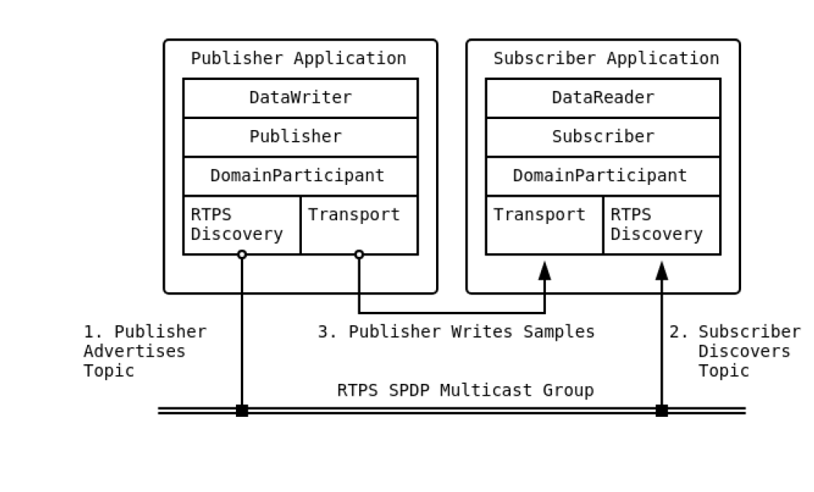
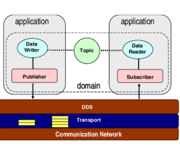

1. Dasar Teori
Memahami pondasi OpenDDS dan konsep WebDDS sesuai standar OMG.
Apa itu OpenDDS?
OpenDDS merupakan implementasi open-source dari standar Data Distribution Service (DDS) yang digunakan untuk membangun komunikasi data secara real-time pada sistem terdistribusi. OpenDDS menggunakan pola publish-subscribe, di mana publisher mengirimkan data dan subscriber menerima data secara langsung tanpa perlu melakukan permintaan berulang (polling).
Pendekatan ini membuat pertukaran data menjadi lebih cepat, efisien, dan sangat cocok untuk aplikasi yang membutuhkan latensi rendah serta aliran data kontinu, seperti sistem radar, monitoring, simulasi, dan IoT.
Multi-Language Binding
Ditulis dalam C++, namun mendukung Java, C#, Node.js, dan Python.
Kustomisasi QoS
Memungkinkan pengaturan Quality of Service yang mendalam untuk kontrol pengiriman data.
OpenDDS: 7 Entitas Utama
Ekosistem DCPS (Data-Centric Publish-Subscribe) dalam OpenDDS terdiri dari 7 entitas utama:
- Domain Participant: Entitas utama yang menghubungkan aplikasi ke DDS Domain.
- Topic: Objek yang menghubungkan pengirim dan penerima melalui nama dan tipe data yang unik.
- Publisher & Subscriber: Entitas yang mengelola kumpulan DataWriter dan DataReader serta konfigurasi QoS grup.
- DataWriter: Komponen yang bertanggung jawab menulis/mengirim data ke Topik tertentu.
- DataReader: Komponen yang bertanggung jawab membaca/menerima data dari Topik tertentu.
- TypeSupport: Hasil generasi file IDL yang mendefinisikan struktur data agar dapat dimengerti oleh sistem DDS.
Arsitektur Transport & Discovery
Untuk berkomunikasi, partisipan DDS memerlukan mekanisme untuk saling menemukan dan mengirimkan pesan:

Gambar di samping menunjukkan alur kerja penemuan partisipan (Discovery) dan pengiriman data antara Publisher dan Subscriber. Proses ini bekerja secara otomatis melalui beberapa tahapan:
- Publisher Advertises Topic: Aplikasi pengirim mengumumkan ketersediaan topik melalui protokol Discovery.
- Subscriber Discovers Topic: Aplikasi penerima mendeteksi pengumuman tersebut menggunakan grup multicast RTPS SPDP (Simple Participant Discovery Protocol).
- Publisher Writes Samples: Setelah terjadi kecocokan (matching), data dikirim secara efisien melalui layer Transport langsung ke tujuan.
Dalam proyek ini, kita menggunakan RTPS Discovery yang bersifat desentralisasi dan RTPS/UDP Transport pada DDS Domain 0 untuk memastikan latensi yang minimal.
Discovery (RTPS)
Proses otomatis untuk menemukan partisipan lain tanpa memerlukan broker pusat (InfoRepo).
Transport (UDP)
Mekanisme pengiriman data yang cepat dan ringan, ideal untuk aliran data radar kontinu.
Bagaimana Proses Data Mengalir?
1. Fase Sumber / Inisiasi (Publisher)
Ini adalah proses di mana informasi pertama kali dibuat dan disiapkan untuk dikirim. Dalam proyek ini, sumbernya bisa berupa C++ Backend yang melakukan kalkulasi pergerakan target radar, atau React Frontend ketika operator menekan tombol instruksi simulasi (Start/Stop).
2. Fase Distribusi / Jembatan Komunikasi (Ruang Data)
Data tidak dikirim satu-ke-satu (point-to-point manual), melainkan "diumumkan" ke sebuah ruang topik bersama. Karena Browser web dan sistem C++ berbicara dengan protokol yang berbeda (WebSocket vs UDP), fase ini secara krusial melibatkan Gateway Node.js untuk menjembatani dan menerjemahkan data binary agar bisa melintas mulus antar platform.
3. Fase Keandalan (Quality of Service / QoS)
Ini adalah "otak pengawas" jaringan. Di proyek ini, QoS bertindak memberikan aturan tegas: instruksi kendali diberi label Reliable (pantang hilang walau jaringan buruk), sementara aliran puluhan ribu radar diberi label Best Effort (boleh hilang sebagian demi mengejar latensi). Ini membuat sistem tangguh tanpa *bottleneck*.
4. Fase Tujuan / Eksekusi (Subscriber)
Ini adalah titik akhir di mana data akhirnya ditangkap dan langsung diwujudkan (rendered). Pada Frontend, wujudnya adalah pembaruan titik objek di kanvas Mapbox secara instan. Pada Backend, wujudnya adalah rekonfigurasi ulang jumlah target objek simulasi.
Visualisasi Alur Integrasi Penuh
Diagram urutan (Sequence Diagram) di bawah ini menjabarkan alur sistem secara dua arah (*Full-loop*): dimulai dari antarmuka Web yang mengirimkan jumlah target objek, perintah tersebut merambat hingga ke level C++, lalu C++ membalasnya dengan memancarkan aliran streaming radar puluhan ribu kali per detik kembali ke Web.
Konsep WebDDS
WEB DATA DISTRIBUTION SERVICE
WebDDS dirancang agar aplikasi web (browser) dapat berpartisipasi dalam ekosistem DDS. Karena browser tidak dapat menjalankan protokol UDP secara langsung, WebDDS menggunakan Gateway sebagai jembatan yang menghubungkan browser (via WebSocket) ke jaringan backend DDS (via biner/UDP).
Analogi Sistem Publish-Subscribe

Gambar: Hubungan antar entitas dalam Domain DDS
Bayangkan di sisi kiri, terdapat Data Writer (penulis artikel) yang hanya fokus menulis berita tanpa perlu tahu siapa pembacanya.
Artikel diserahkan ke Publisher (kantor percetakan) dengan label Topic tertentu (misal: "Berita SepakBola").
Di sisi kanan, Subscriber (pembaca) akan menerima berita secara otomatis melalui Data Reader jika ia berlangganan topik tersebut.
Penulis tidak perlu menghubungi pembaca satu per satu. Cukup taruh data di sistem distribusi, dan semua pelanggan akan menerima informasi secara real-time.